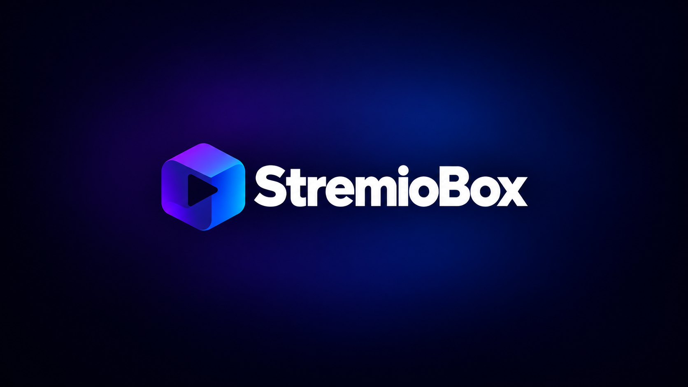
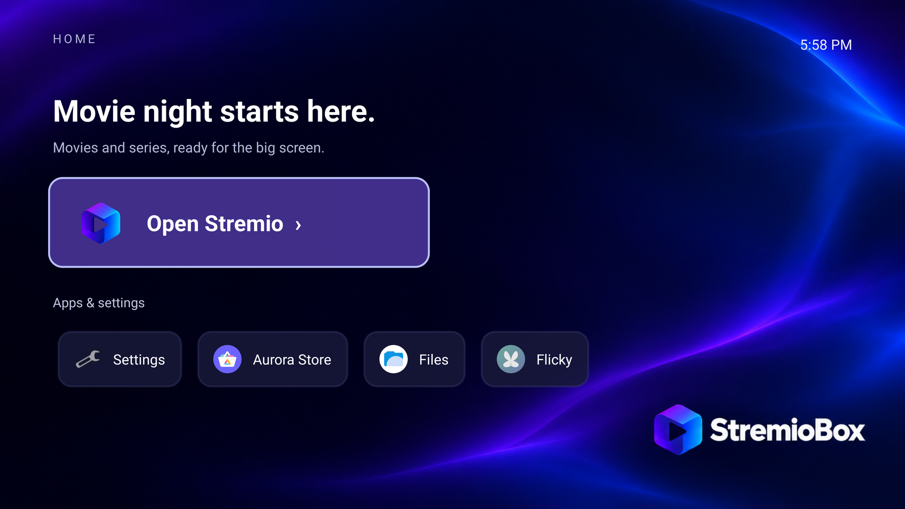

4K HDR that looks right
Films play in 4K with real HDR, decoded by the PC's own video chip, and the TV switches to the right frame rate for smooth motion.
How we tested itTurn a small Intel PC into a box that starts straight into Stremio. Grab the remote and watch — in 4K HDR with Dolby Digital surround sound. No desktop, no ads, no Google account.

WHAT YOU GET
Everything is set up for watching with a remote. Stremio works exactly as you know it, with its own player, seek bar and controls.
Films play in 4K with real HDR, decoded by the PC's own video chip, and the TV switches to the right frame rate for smooth motion.
How we tested itDolby Digital 5.1 goes to your soundbar or receiver, so dialogue comes from the centre speaker instead of drowning in the music. Stereo TVs work too.
Sound setup tipsPair a Bluetooth TV remote and it keeps working after restarts and standby. A USB keyboard works too.
Tested remotesStandby works like a normal TV box: picture, sound and remote come back — even after hours, or after switching the TV to another input.
About standbyAurora Store and Flicky are built in to install other apps. Prefer NuvioTV? Install it and StremioBox gives it HDR and copies your Stremio addons.
NuvioTV guideAn optional rescue system sits one menu entry away. If Android ever stops starting, you can still check the disk and get your files back.
Rescue guide
WHAT'S NEW
Each release fixes something real people ran into. The changelog has every detail.
LATEST · RECOMMENDED · OCTOBER 2026
Real 5.1 Dolby Digital through your TV to the soundbar, sound that comes back by itself after switching inputs, a working sync option in Stremio and optional NuvioTV with HDR.
What changedOCTOBER 2026
No more black screen after long standby, no scrolling text on the TV, and two app stores for installing other apps.
What changedFIRST RELEASE · OCTOBER 2026
The start: Android 16 with Stremio, 4K HDR playback, HDMI sound, the Bluetooth remote, subtitle fixes and the StremioBox home screen.
What changedWHAT YOU NEED
StremioBox has been tested on the setup below. Other Intel PCs may well work — nobody has checked yet. Tried one? We'd love to hear how it went.
Full compatibility listChecked on this setup: 4K HDR playback, surround sound, the remote after restarts, and waking from standby.
Not checked yet: other PCs and graphics chips, Dolby Vision, 4K at 60 frames per second, and TV remote control over HDMI (CEC).
GET STREMIOBOX
Download-StremioBox.cmd; it fetches and checks the image.git clone https://github.com/zubSero/StremioBox.git
cd StremioBox
powershell.exe -NoProfile -ExecutionPolicy Bypass -File tools/download.ps1 -OutputDirectory downloadsTip: set your TV's digital audio output to Auto or Passthrough for surround sound. Already have an older StremioBox? See your update options.
The image is about 2.9 GB; keep 6 GB free while it downloads. Try it from USB first — installing to the disk works but isn't fully tested yet. It contains no accounts or personal data; keep the box on your home network. Security details.
QUESTIONS
No. StremioBox is an independent, free community project built around the official Stremio app. It isn't affiliated with Stremio, LineageOS, Nuvio or Dolby.
Not really. You download a file, put it on a USB stick and start the PC from it. The installation guide walks you through each screen. Optional extras use one command that the guides spell out.
Yes. It's the official Stremio app with its own player and controls. StremioBox adds the home screen and makes video, sound and the remote work properly on this hardware.
Yes. Aurora Store and Flicky are built in. There are no Google services, so a few apps — mainly paid streaming services — may not work. More about apps.
Stremio stays the default, but if you prefer NuvioTV you can install it yourself. StremioBox then gives it HDR and copies your Stremio addons with one command. NuvioTV guide.
Set the TV's digital audio output to Auto or Passthrough and use the latest release. If sound disappeared after switching TV inputs, it comes back by itself within a few seconds of playback. Troubleshooting.
There are a few other routes, each with its own requirements. Installing without USB.
Install the optional rescue system while everything works. If Android ever stops starting, it lets you check the disk and copy your files. Rescue guide.
Everything is open: platform patches, the home screen source, build tools, test records and a detailed changelog. Start with the architecture and the build guide.
JOIN IN
Tell us which computer, remote and TV you used and what worked. Every report helps the next person — and pull requests are always welcome.